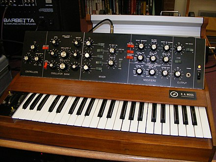

A synthesizer (also spelled synthesiser)[1] is an electronic musical instrument that generates audio signals. Synthesizers typically create sounds by generating waveforms, through methods including subtractive synthesis, additive synthesis and frequency modulation synthesis. These sounds may be altered by components such as filters, which cut or boost frequencies; envelopes, which control articulation, or how notes begin and end; and low-frequency oscillators, which modulate parameters such as pitch, volume, or filter characteristics affecting timbre. Synthesizers are typically played with keyboards or controlled by sequencers, software or other instruments, and may be synchronized to other equipment via MIDI. Synthesizer-like instruments emerged in the United States in the mid-20th century with instruments such as the RCA Mark II, which was controlled with punch cards and used hundreds of vacuum tubes. The Moog synthesizer, developed by Robert Moog and first sold in 1964, is credited for pioneering concepts such as voltage-controlled oscillators, envelopes, noise generators, filters, and sequencers. In 1970, the smaller, cheaper Minimoog standardized synthesizers as self-contained instruments with built-in keyboards, unlike the larger modular synthesizers before it. In 1978, Sequential Circuits released the Prophet-5, which used microprocessors to allow users to store sounds for the first time. 1982 saw the introduction of MIDI, a standardized means of synchronizing electronic instruments that remains an industry standard. The first mass-produced synthesizer, the Yamaha DX7, was launched in 1983, popularizing digital synthesis. Software synthesizers now can be run as plug-ins or embedded on single microchips in any electronic device. Synthesizers were initially viewed as avant-garde, valued by the 1960s psychedelic and counter-cultural scenes but with little perceived commercial potential. Switched-On Bach (1968), a bestselling album of Bach compositions arranged for synthesizer by Wendy Carlos, took synthesizers to the mainstream. They were adopted by electronic acts and pop and rock groups in the 1960s and 1970s, and widely used in 1980s rock. Sampling, introduced with the Fairlight synthesizer in 1979, has influenced all genres of music and had a major influence on the development of electronic and hip hop music. Today, the synthesizer is used in nearly every genre of music, and is considered one of the most important instruments in the music industry. According to Fact in 2016, "The synthesizer is as important, and as ubiquitous, in modern music today as the human voice."
As electricity became more widely available, the early 20th century saw the invention of electronic musical instruments including the Telharmonium, Trautonium, Ondes Martenot, and theremin.[3] In the late 1930s, the Hammond Organ Company built the Novachord, a large instrument powered by 72 voltage-controlled amplifiers and 146 vacuum tubes.[4] In 1948, the Canadian engineer Hugh Le Caine completed the electronic sackbut, a precursor to voltage-controlled synthesizers, with keyboard sensitivity allowing for vibrato, glissando, and attack control.[3] In 1957, Harry Olson and Herbert Belar completed the RCA Mark II Sound Synthesizer at the RCA laboratories in Princeton, New Jersey. The instrument read punched paper tape that controlled an analog synthesizer containing 750 vacuum tubes. It was acquired by the Columbia-Princeton Electronic Music Center and used almost exclusively by Milton Babbitt, a composer at Princeton University. The authors of Analog Days define "the early years of the synthesizer" as between 1964 and the mid-1970s, beginning with the debut of the Moog synthesizer.[5]: 7 Designed by American engineer Robert Moog, the synthesizer was composed of separate modules which created and shaped sounds, connected by patch cords.[6] Moog developed a means of controlling pitch through voltage, the voltage-controlled oscillator.[7] This, along with Moog components such as envelopes, noise generators, filters, and sequencers, became standard components in synthesizers.[8][5] Around the same period, American engineer Don Buchla created the Buchla Modular Electronic Music System.[9] Instead of a conventional keyboard, Buchla's system used touchplates which transmitted control voltages depending on finger position and force.[5] However, the Moog's keyboard made it more accessible and marketable to musicians, and keyboards became the standard means of controlling synthesizers.[5] Moog and Buchla initially avoided the word synthesizer for their instruments, as it was associated with the RCA synthesizer; however, by the 1970s, "synthesizer" had become the standard term.[5] In 1970, Moog launched a cheaper, smaller synthesizer, the Minimoog.[10][11] The Minimoog was the first synthesizer sold in music stores,[5] and was more practical for live performance; it standardized the concept of synthesizers as self-contained instruments with built-in keyboards.[12][13] After retail stores started selling synthesizers in 1971, other synthesizer companies were established, including ARP in the US and EMS in the UK.[5] ARP's products included the ARP 2600, which folded into a carrying case and had built-in speakers, and the Odyssey, a rival to the Minimoog.[5] The less expensive EMS synthesizers were used by European art rock and progressive rock acts including Brian Eno and Pink Floyd.[5] Designs for synthesizers appeared in the amateur electronics market, such as the "Practical Electronics Sound Synthesiser", published in Practical Electronics in 1973.[1] By the mid-1970s, ARP was the world's largest synthesizer manufacturer,[5] though it closed in 1981.[14] Early synthesizers were monophonic, meaning they could only play one note at a time. Some of the earliest commercial polyphonic synthesizers were created by American engineer Tom Oberheim,[9] such as the OB-X (1979).[5] In 1978, the American company Sequential Circuits released the Prophet-5, the first fully programmable polyphonic synthesizer.[8]: 93 Whereas previous synthesizers required users to adjust cables and knobs to change sounds, with no guarantee of exactly recreating a sound,[5] the Prophet-5 used microprocessors to store sounds in patch memory.[15] This facilitated a move from synthesizers creating unpredictable sounds to producing "a standard package of familiar sounds".[5]: 385 The synthesizer market grew dramatically in the 1980s.[8]: 57 1982 saw the introduction of MIDI, a standardized means of synchronizing electronic instruments; it remains an industry standard.[16] An influential sampling synthesizer, the Fairlight CMI, was released in 1979,[15] with the ability to record and play back samples at different pitches.[17] Though its high price made it inaccessible to amateurs, it was adopted by high-profile pop musicians including Kate Bush and Peter Gabriel. The success of the Fairlight drove competition, improving sampling technology and lowering prices;[17] early competing samplers included the E-mu Emulator in 1981[17] and the Akai S-series in 1985. In 1983, Yamaha released the first commercially successful digital synthesizer, the Yamaha DX7.[19] Based on frequency modulation (FM) synthesis developed by Stanford University engineer John Chowning,[20] the DX7 remains one of the bestselling synthesizers in history[19][21] and was the first synthesizer to sell over 100,000 units.[8]: 57 It was widely used in 1980s pop music.[22] Compared to the "warm" and "fuzzy" sounds of analog synthesis, the DX7 was characterized by its "harsh", "glassy" and "chilly" sounds.[2] Digital synthesizers typically contained preset sounds emulating acoustic instruments, with algorithms controlled with menus and buttons.[5] The Synclavier, a digital synthesizer made with FM technology licensed from Yamaha, offered features such as 16-bit sampling and built-in digital recording. With a starting price of $13,000, its use was limited to universities, studios and wealthy artists The success of the DX7 led to competing digital synthesizers. The Roland D-50 (1987) blended Roland's linear arithmetic algorithm with samples, and was the first mass-produced synthesizer with built-in digital effects such as delay, reverb and chorus.[8]: 63 In 1988, the Japanese manufacturer Korg released the M1, a digital synthesizer workstation featuring sampled transients and loops;[25] with over 250,000 units sold, it remains the bestselling synthesizer in history.[25] The advent of digital synthesizers led to a downturn in interest in analog synthesizers 1997 saw the release of ReBirth by Propellerhead Software and Reality by Seer Systems, the first software synthesizers that could be played in real time via MIDI.[8] In 1999, an update to the music software Cubase allowed users to run software instruments (including synthesizers) as plug-ins, triggering a wave of new software instruments.[26] Propellerhead's Reason, released in 2000, introduced an array of recognizable virtual studio equipment.[26] The market for patchable and modular synthesizers rebounded in the late 1990s.[8]: 32 In the 2000s, older analog synthesizers regained popularity, sometimes selling for much more than their original prices.[27] In the 2010s, new, affordable analog synthesizers were introduced by companies including Moog, Korg, Arturia and Dave Smith Instruments. The renewed interest is credited to the appeal of imperfect "organic" sounds and simpler interfaces, and modern surface-mount technology making analog synthesizers cheaper and faster to manufacture.[27]
Early synthesizers were viewed as avant-garde, valued by the 1960s psychedelic and counter-cultural scenes for their ability to make new sounds, but with little perceived commercial potential. Switched-On Bach (1968), a bestselling album of Bach compositions arranged for Moog synthesizer by Wendy Carlos, demonstrated that synthesizers could be more than "random noise machines",[6] taking them to the mainstream.[5] However, debates were held about the appropriateness of synthesizers in baroque music, and according to the Guardian they were quickly abandoned in "serious classical circles".[28] The Moog was adopted by acts including the Doors, the Grateful Dead, the Rolling Stones, the Beatles, and Keith Emerson.[29] Emerson was the first major rock musician to perform with the Moog and it became a trademark of his performances, helping take his band Emerson, Lake & Palmer to global stardom; according to Analog Days, the likes of Emerson, with his Moog performances, "did for the keyboard what Jimi Hendrix did for the guitar".[5]: 200 The portable Minimoog (1970), much smaller than the modular synthesizers before it, made synthesizers more common in live performance.[13] The Minimoog took a place in mainstream black music, most notably in the work of Stevie Wonder,[5] and in jazz, such as the work of Sun Ra.[30] It was also used by electronic artists such as Kraftwerk, who used it on their albums Autobahn (1974) and The Man-Machine (1978), and later by Tangerine Dream, Klaus Schulze, and Gary Numan.[30] In the late 1970s and the early 1980s, the Micromoog was widely used in the emerging disco genre by artists including Abba and Giorgio Moroder.[30] Some acts felt that using synthesizers to create sounds was "cheating"; Queen wrote in their album liner notes that they did not use them.[31] Early synthesizers could only play one note at a time, making them suitable for basslines, leads and solos.[30] With the rise of polyphonic synthesizers in the 70s and 80s, "the keyboard in rock once more started to revert to the background, to be used for fills and atmosphere rather than for soloing".[5]: 207 Sampling, introduced with the Fairlight synthesizer in 1979, has influenced all genres of music[7] and had a major influence on the development of electronic and hip hop music.[32][33] In the 1970s, electronic music composers such as Jean Michel Jarre[34] and Isao Tomita[35][36][37] released successful synthesizer-led instrumental albums. This influenced the emergence of synthpop, a subgenre of new wave, from the late 1970s to the early 1980s. The work of German krautrock bands such as Kraftwerk[38] and Tangerine Dream, British acts such as John Foxx, Gary Numan and David Bowie, African-American acts such as George Clinton and Zapp, and Japanese electronic acts such as Yellow Magic Orchestra and Kitaro were influential in the development of the genre.[39] Gary Numan's 1979 hits "Are 'Friends' Electric?" and "Cars" made heavy use of synthesizers.[40][41] OMD's "Enola Gay" (1980) used distinctive electronic percussion and a synthesized melody. Soft Cell used a synthesized melody on their 1981 hit "Tainted Love".[39] Nick Rhodes, keyboardist of Duran Duran, used various synthesizers including the Roland Jupiter-4 and Jupiter-8.[42] Chart hits include Depeche Mode's "Just Can't Get Enough" (1981),[39] the Human League's "Don't You Want Me"[43] and works by Ultravox.[39] In the 1980s, digital synthesizers were widely used in pop music.[22] The Yamaha DX7, released in 1983, became a pop staple, used on songs by A-ha, Kenny Loggins, Kool & the Gang.[2] Its "E PIANO 1" preset became particularly famous,[2] especially for power ballads,[44] and was used by artists including Whitney Houston, Chicago,[44] Prince,[22] Phil Collins, Luther Vandross, Billy Ocean,[2] and Celine Dion.[45] The Roland TB-303 (1981), in conjunction with the Roland TR-808 and TR-909 drum machines, became a foundation of electronic dance music genres such as house and techno when producers acquired cheap second-hand units later in the decade.[46] Korg M1 presets were widely used in 1990s house music, beginning with Madonna's 1990 single "Vogue".[47] Today, the synthesizer is used in nearly every genre of music.[5]: 7 It is considered by the authors of Analog Days "the only innovation that can stand alongside the electric guitar as a great new instrument of the age of electricity ... Both led to new forms of music, and both had massive popular appeal."[5]: 7 The authors draw a connection to the synthesizer's origins in 1960s psychedelia to the raves and British "second summer of love" of the 1980s and the club scenes of the 1990s and 2000s.[5]: 321 According to Fact in 2016, "The synthesizer is as important, and as ubiquitous, in modern music today as the human voice."[2] It is one of the most important instruments in the music industry.[39]